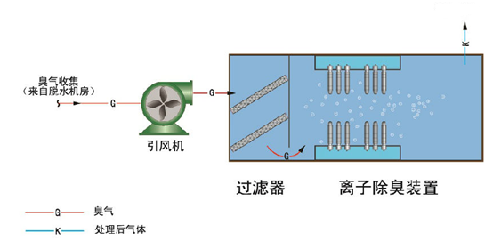
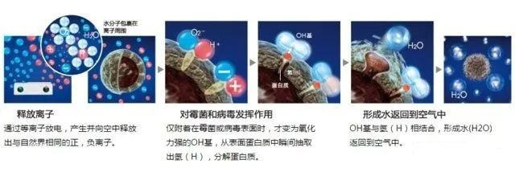

常见物理消毒灭菌技术
按国家卫生健康委发布的《新型冠状病毒肺炎防控方案》，“新型冠状病毒属于β属冠状病毒，基因特征与SARSr-CoV和MERSr-CoV有明显区别。病毒对紫外线和热敏感，56℃30分钟、乙醚、75%乙醇、含氯消毒剂、过氧乙酸和氯仿等脂溶剂均可有效灭活病毒”。我们可采取化学药品和相关技术手段，对空气和物品进行消毒，减少微生物菌种、毒株的个体在空气中的浓度，以减少人群传染病的发生。
此前，EHS资讯网已经介绍了常见化学消毒剂及其安全使用注意事项，紫外线等物理消毒灭菌技术手段，与化学消毒剂相比较，对环境破坏性较小，存储要求低。
1、紫外线灯
紫外线杀菌消毒是利用适当波长的紫外线能够破坏微生物机体细胞中的DNA（脱氧核糖核酸）或RNA（核糖核酸）的分子结构，造成生长性细胞死亡和（或）再生性细胞死亡，达到杀菌消毒的效果。紫外线消毒技术是基于现代防疫学、医学和光动力学的基础上，利用特殊设计的高效率、高强度和长寿命的UVC波段紫外光照射流水，将水中各种细菌、病毒、寄生虫、水藻以及其他病原体直接失活杀死。
紫外线消毒灯也要正确使用，否则会带来较严重的危害。常见的危害有：1）对皮肤的损害。暴露在紫外线消毒灯下，皮肤可引起红肿、疼痛、脱屑等改变。如果长时间照射，可能会引起皮肤的癌变和发生皮肤的肿瘤。2）对眼睛的损害，紫外线消毒灯可引起眼睛的结膜炎、角膜炎，眼睛出现红肿、疼痛、流泪的现象，长时间应用，很可能会诱发白内障。所以使用紫外线消毒灯时，房间内尽量不要有人。
以下几种物理消毒灭菌技术手段不适应新型冠状病毒(SARS-CoV-2)，但可以破坏和抑制一些其它细菌和病毒，请注意区分开。
2、等离子设备
如下图, 低温等离子的工艺原理是：离子发生器在电场作用下产生大量高能电子，高能电子与空气中的氧分子进行碰撞而形成活性氧离子（O2+/-）。活性氧离子能分解有害气体和异味，团聚和消除可吸入颗粒物，杀灭致病微生物，破坏和抑制细菌、病毒和霉菌的繁殖②。

3、负离子发生设备
空气中的负离子与细菌、霉菌、病毒等接触，由于负离子本身携带多余电子，会破坏它们的分子蛋白结构，使其产生结构性改变（蛋白质两极性颠倒）或能量转移，从而使细菌病毒等微生物死亡。但是，适量浓度的负离子不但对人体无害，而且还有益于人体健康，所以“负离子杀菌”是比臭氧或紫外线杀菌更为环保的杀菌方式。

4、臭氧发生器
臭氧发生器是一种空气或水净化装置，它的主要作用是使用臭氧杀死细菌和过滤污染物。臭氧以氧原子的氧化作用破坏微生物膜的结构，以实现杀菌作用。臭氧对细菌的灭活反应总是进行的很迅速，与其它杀菌剂不同的是：臭氧能与细菌细胞壁脂类的双键反应，穿入菌体内部，作用于蛋白和脂多糖，改变细胞的通透性，从而导致细菌死亡。臭氧还作用于细胞内的核物质，如核酸中的嘌呤和嘧啶破坏DNA。
5、HEPA高效过滤膜
对于0.1微米和0.3微米的有效率达到99.998%，HEPA网的特点是空气可以通过，但细小的微粒却无法通过。是烟雾、灰尘以及细菌等污染物最有效的过滤媒介。
原文编辑: EHS资讯
原文链接: https://ehsinfo.cn/2020/03/17/常见物理消毒灭菌技术.html
版权声明: 转载请注明出处(必须保留作者署名及链接)